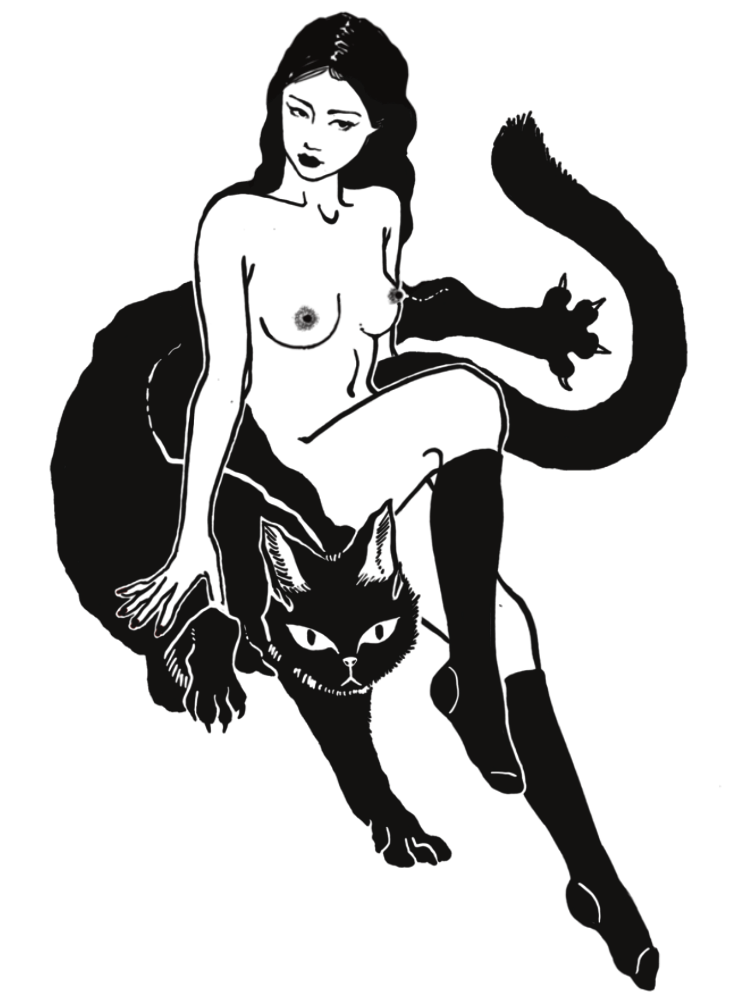

VANSHA TAI
The person behind
ILLUSTRATION
BRANDING & GRAPHIC DESIGN
FASHION DESIGN
PHOTOGRAPHY
VIDEO EDITING
COPYWRITING
HANDPOKE TATTOO
EVENT CURATION
INCENSE MAKING
GOLDSMITHING
BRANDING & GRAPHIC DESIGN
FASHION DESIGN
PHOTOGRAPHY
VIDEO EDITING
COPYWRITING
HANDPOKE TATTOO
EVENT CURATION
INCENSE MAKING
GOLDSMITHING

INDEPENDENT PRACTICE
STRANGEWAYS APARTMENTS
Founder 2013 - Present
A multidisciplinary studio delivering anything art related, including but not limited to illustration, brand identity, graphic design, fashion design, event curation, photography, and video production.
Also open to anything fun.
Maintained the practice continuously alongside full-time roles across Japan, Malaysia, and China, sustaining a personal client base for over ten years.
PROFESSIONAL EXPERIENCE
JINGZHI MEDIA
Video Producer 2024 - 2025 (Hybrid Remote)
Planned, voiced, shot, and edited video content, traveling to Shanghai monthly for on-location feature shoots while managing post-production remotely.
JING DAILY CHINA
Video Editor 2021 - 2024 (Remote)
Edited, voiced, and designed long- and short-form videos daily for a global media brand covering luxury industry news, executive interviews, event coverage, and feature reporting.
11F
Art Director 2017 - 2021 (Malaysia)
Led primary visual design and media content for an independent creative hub, conceived and organized cultural programming including exhibitions, art markets, film screenings, book clubs, music events, and DJ parties.
ZENITH'S GROUP
Creative Director 2017 - 2018 (Malaysia)
Directed creative design and marketing across three bar venues under the group.
PAGONG KYOTO
Designer - Sales 2015 - 2016 (Japan)
Supported design and retail sales operations for the brand.
EDUCATION
MANCHESTER METROPOLITAN UNIVERSITY
BA(Hons) FASHION DESIGN
KYOTO JAPANESE LANGUAGE SCHOOL
ADVANCED COURSE
LANGUAGES
Mandarin Chinese
Native
English
Fluent
Cantonese
Fluent
Malay
Fluent
Japanese
Fluent